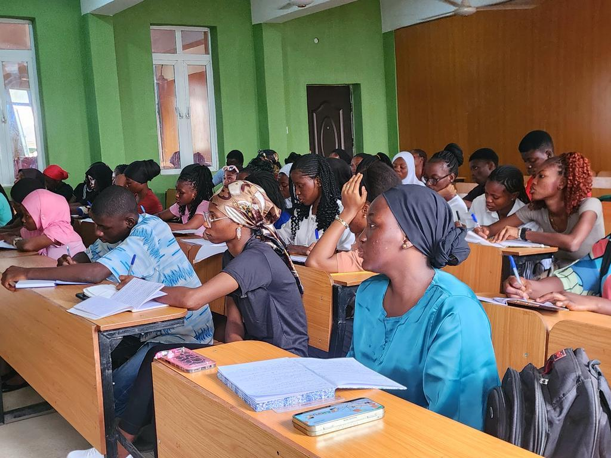
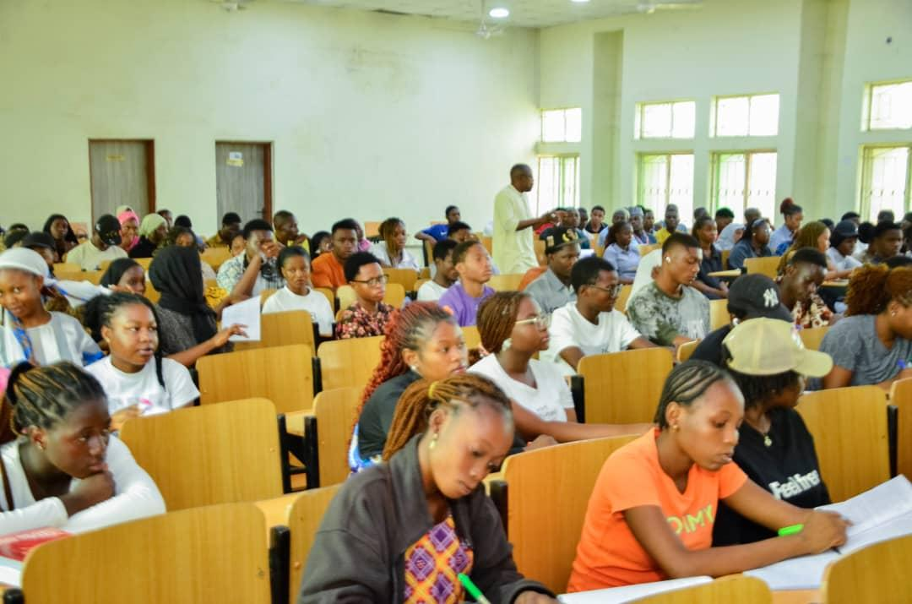
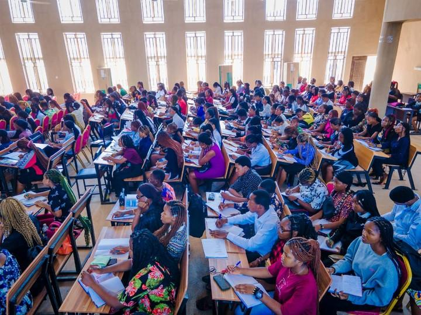

NELFUND Disburses ₦322 Billion to 1.66 Million Student Loan Beneficiaries Since Inception
Posted on 9th August, 2026.
The Nigerian Education Loan Fund (NELFUND) has continued to expand its financial support for students across Nigeria, with the student loan scheme reportedly reaching about ₦322 billion in cumulative disbursements and approximately 1.66 million beneficiaries since its inception.
The development highlights the growing role of the Federal Government's student loan programme in helping Nigerian students meet the financial demands of tertiary education.
Recent NELFUND figures reported in July 2026 put total disbursements at ₦303.91 billion for about 1.64 million students as of July 3. The latest reported figure therefore represents further growth in both funding and beneficiaries.
NELFUND Student Loan Scheme Continues to Grow
The NELFUND student loan initiative was introduced to reduce financial barriers that prevent qualified Nigerians from accessing or completing tertiary education.
Since the opening of the application portal in May 2024, millions of applications have been submitted by students seeking support for institutional fees and living expenses.
Earlier in March 2026, NELFUND reported that it had disbursed ₦206.29 billion to 1,164,222 beneficiaries, with ₦128.84 billion paid to institutions for tuition and ₦77.45 billion provided to students as upkeep allowances.
The rapid increase in the figures demonstrates how quickly the programme has expanded since its launch.

How the NELFUND Funding Supports Students
NELFUND's support is broadly divided into two major areas.
1. Institutional Fees 
A portion of the loan is paid directly to participating tertiary institutions to help cover eligible institutional charges on behalf of students.
This arrangement reduces the immediate financial burden on students and their families and allows beneficiaries to continue their education without having to raise the entire cost of their institutional fees at once.
2. Upkeep Allowance
NELFUND also provides upkeep support directly to eligible students. The funds are intended to help beneficiaries manage expenses associated with their education and daily living.
As of March 2026, NELFUND had reported ₦77.45 billion in upkeep disbursements, alongside ₦128.84 billion paid to institutions.
More Than 1.6 Million Students Benefiting
One of the most significant developments in the programme has been the increase in the number of students benefiting from the scheme.
By early July 2026, reports based on NELFUND records indicated that the number of beneficiaries had risen to approximately 1.64 million, compared with about 1.59 million in early May.
 The latest figure of roughly 1.66 million beneficiaries shows that the programme continues to expand as applications are processed and payments are made.
The latest figure of roughly 1.66 million beneficiaries shows that the programme continues to expand as applications are processed and payments are made.
The NELFUND website also provides a public data dashboard showing the scale of its student-loan initiative and participating institutions.
NELFUND Reaches More Institutions
The expansion is not limited to the number of students. More tertiary institutions are also participating in the programme.
In March 2026, NELFUND reported that 270 institutions had benefited from the scheme. By April, reports indicated that the number of participating institutions had increased further, with the programme covering institutions across different parts of Nigeria.
In July 2026, for example, NELFUND announced a ₦1.5 billion disbursement to 6,129 students across three institutions for the 2025/2026 academic session. The institutions included Bamidele Olumilua University of Education, Science and Technology in Ekiti State, Sikiru Adetona College of Education, Science and Technology in Ogun State, and Edo State College of Nursing Sciences in Benin City.

What the Development Means for Nigerian Students
The increasing disbursement of student loans could provide significant relief to families struggling with the rising cost of higher education.
For students who qualify, financial assistance can help them remain in school, concentrate on their studies and reduce the pressure associated with paying tuition and meeting basic educational expenses.
The scheme is also intended to improve access to higher education by ensuring that financial difficulties do not automatically prevent eligible students from pursuing tertiary education.
According to information on the official NELFUND portal, the loan is interest-free, while repayment is structured to begin after the applicable period following NYSC.
NELFUND Scheme Targets Wider Coverage
The Federal Government and the National Assembly have also indicated plans to significantly expand the reach of the student loan programme.
A June 2026 report said NELFUND and the National Assembly were working on an expansion strategy aimed at increasing the programme's reach from about 1.6 million beneficiaries to seven million students nationwide.
If successfully implemented, the expansion could make the scheme accessible to millions more Nigerian students who require financial assistance to pursue higher education.
Conclusion
NELFUND's reported milestone of approximately ₦322 billion disbursed to about 1.66 million students since inception represents a major expansion of Nigeria's student financing programme.
From tuition payments made directly to institutions to upkeep support provided to students, the initiative is designed to address some of the financial challenges facing students in tertiary institutions.
With the number of beneficiaries continuing to grow and plans underway to expand coverage further, NELFUND is becoming an increasingly important part of Nigeria's effort to improve access to higher education.
Students interested in the programme should rely on the official NELFUND portal and announcements from their institutions for current application, eligibility and disbursement information.